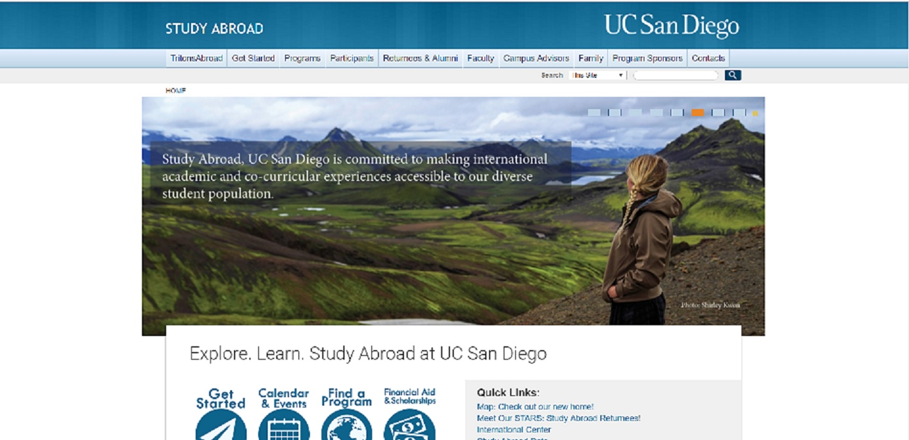

The prototype that we had to use was Balsamiq to create some low fidelity functional wireframes. There were a lot of different utensils and options to play with. It was fun just trying out different things to just experiment and see what we like. It was a good way to get behind the design decisions made to design the pages.